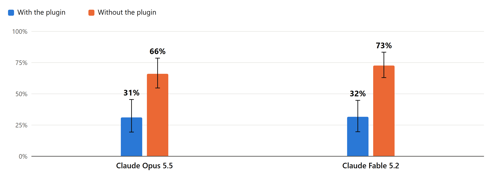
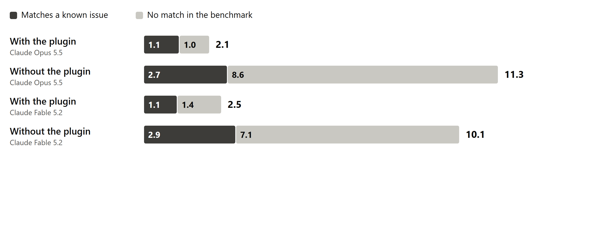
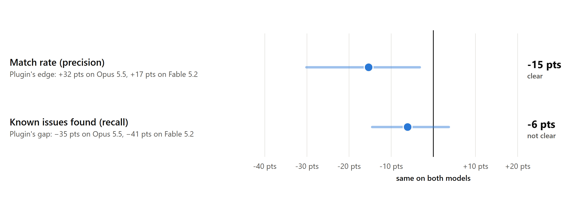
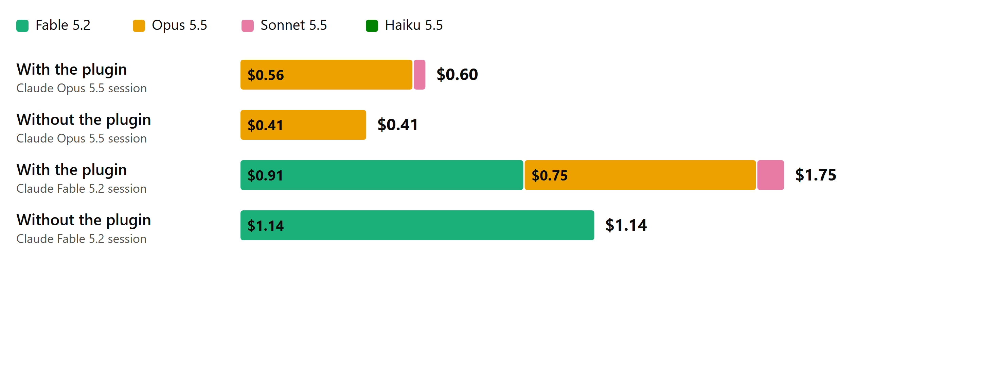
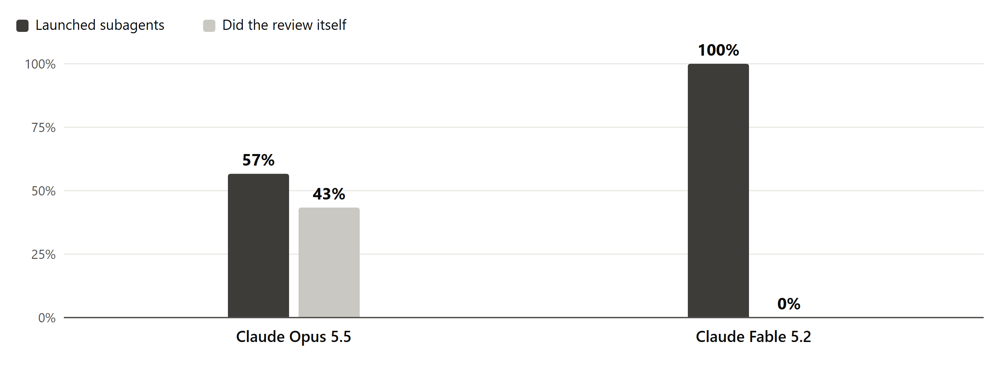
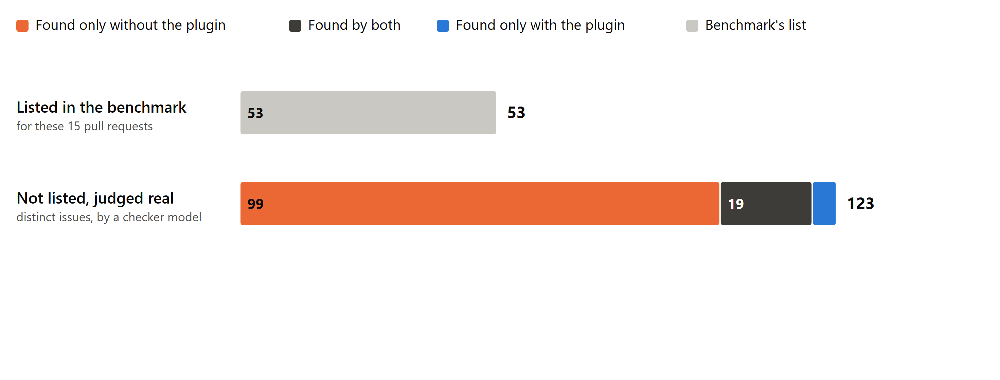

Research Edition 1
Does the Official Code-Review Plugin Still Help?
A first look, comparing it with a simple request on two new AI models.
- 2×as many known mistakes found without the plugin, on both models
- 0 of 15code changes where the plugin found more known mistakes than a simple request
- 1.5×what a plugin review cost, compared with a simple request
- 123separate mistakes the AI reported that the test set does not list, judged real by a second AI
Summary
AI coding tools can be given add-ons called plugins. A plugin is a set of written steps that tells the AI how to do a job. The steps are written for the AI models of the day. Then a newer model comes out, and few people check whether the steps still help.
This paper checks one well-known plugin: the official code-review plugin for Claude Code, made by Anthropic. We gave the AI 15 real code changes to check for mistakes. Each change was checked two ways: with the plugin, and with a simple one-paragraph request. We did this on two models, Claude Opus 5.5 and Claude Fable 5.2, twice each. That made 120 reviews. We kept a record of which model answered every request.
Without the plugin, each model found about twice as many of the known mistakes. It found 66% against 31% on Opus 5.5, and 73% against 32% on Fable 5.2. The plugin said much less. A bigger share of what it said matched a known mistake, and it cost about one and a half times as much. On none of the 15 code changes did the plugin find more of the known mistakes than the simple request.
The plugin’s one advantage was smaller on the newer model. The plugin also picks its own models for its helpers. So on the newer model, the checking was still done by the older one. And the older model skipped the plugin’s team process in 13 of 30 reviews. Those reviews cost a third as much and did about as well.
We also looked at the 543 things the AI reported that were not on the list of known mistakes. A second AI judged 285 of them to be real. They come to 123 separate mistakes the list does not have. When a more careful AI review looked again at 30 of those judgements, it agreed with 24.
Read this as a first look. It is a small study. The test set is public, an AI did the grading, and we did not set pass marks ahead of time. No person checked the grading. The results call for a bigger study. They are not a final verdict on the plugin.
The main result
Each model was asked to review the same code changes with the plugin and without it. The bars show how much of the list of known mistakes each review found.

What the plugin is good at
The plugin reports far less. More of what it reports is on the list of known mistakes.

The idea we set out to test
The idea was that plugins age badly: steps written for an older model help less on a newer one. Fable 5.2 came out after the plugin’s current steps were written, so the plugin should help less there.
The result is half and half. On the share of findings that matched, the plugin’s lead was clearly smaller on the newer model. On the share of known mistakes found, the difference could be chance. The idea got some support. It is not proven.

The plugin picks its own models
The plugin names a model for each of its helpers. When we chose the newer model, the bug hunting was still done by the older one. Moving up to a newer model did not give us a newer review.

The older model often skipped the plugin’s process
The plugin tells the AI to hand work to a team of helpers. Opus 5.5 did not do that in 13 of its 30 plugin reviews. It did the review alone, did about as well, and cost a third as much.

Mistakes that were not on the list
The test set lists 53 known mistakes in these 15 code changes. The reviews reported many things that were not on that list. A second AI went through all 543 of them and judged 285 to be real. Counting each mistake once gives 123.

What to do with this
- Read a plugin before you depend on it. This one picks its own models, covers less than its name suggests, and has a help page for an older design.
- Keep a record of which model answers each request if you want to say what a model did or what it cost.
- Set the effort level yourself when you compare models. The two here have different defaults.
- Test your instructions again when the model changes. Here that cost about $136.
Read more
- The full paper (PDF), with every table, all twelve charts, the limits, and the earlier work it builds on
- Code and results: the testing programs and the data for every review
- How the test works: the method, with a page for engineers and a page for people who study AI testing
Cite this
@techreport{michel2026codereviewplugin,
author = {Michel, Ian J},
title = {Does the Official Code-Review Plugin Still Help? A First Look,
Comparing It with a Simple Request on Two New AI Models},
institution = {Side of My Desk LLC},
number = {Research Edition 1},
year = {2026},
month = nov,
doi = {10.5281/zenodo.24357018},
url = {https://research.sideofmydesk.com/edition-1/}
}
About the author
Ian J Michel is a software engineer with more than twenty years of experience and the writer of Side of My Desk Research. Ian J Michel on LinkedIn.
Independent work by Side of My Desk LLC; views are my own, not my employer’s.
About this work
This study was done with a great deal of help from Claude Code, Anthropic’s AI coding tool. Under the author’s direction it wrote the testing programs, ran the reviews, did the analysis, and drafted the paper and this page. The author made the design choices and is responsible for what they say. The tool tested, the models that graded it, and the assistant that helped are all Claude models from one company.
The reviews cost about $136, paid from promotional credits that came with the author’s Anthropic subscription. The author has no other financial tie to Anthropic. Anthropic had no part in this work.
Questions and corrections: research@sideofmydesk.com. Licensed under CC BY 4.0.